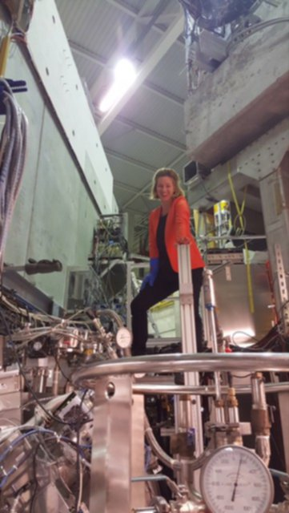

From Higgs boson discovery to data science
Growing up, Lillian never thought she would one day work on research that led to a Nobel prize. She never thought she would work on leading dark matter and antimatter experiments. She never thought she would work at CERN. Actually, she never thought she would study physics, at all.
I had the pleasure of meeting Lillian during my time at CERN. We worked together on an experiment that aims to perform the first direct measurement of Earth’s gravitational acceleration on antihydrogen. My first impression of Lillian was: unique style, brilliant mind, quiet, and has an addictive laughter. My second impression of Lillian was: she can pull off hair styles that nobody else can, even more brilliant than I thought, humble, beautiful personality, she is not so quiet after all, and when she speaks you should listen. And that is exactly what I did.
Many times, she gave me guidance, support, advice, and help when I was facing difficulties and decisions that come along with academia and fundamental research. I asked her if she would do the same for you, so here it is: an honest interview about her experience at CERN, the main differences between academia and industry and a little advice for anyone thinking of leaving academia. This is just a small insight into her life and her science adventure, but hopefully a very useful one to you. Enjoy!
Hey Lillian, welcome to Tau Bytes blog and thank you again for taking the time to share your experience with us. I would like to start from the very beginning. Is it really true that growing up you never wanted to be a physicist?
Lillian: In fact, I never knew what I wanted to be. The question “what do you want to be when you grow up?” never seemed a fitting one to for me; it felt rather like a limiting one. At school, my favourite subject was maths. I loved the simplicity of a solution, I loved that the answer was well-defined if not unique. The world in maths seemed simpler than the messy one we live in. In fact, physics was one of my weaker subjects. I lacked a good intuition in it — which turned out to be an advantage when I encountered quantum physics, where ordinary intuition breaks down.
But wait, if physics was one of your weaker subjects how did you end up studying it?
Lillian: While “challenge accepted!” could have been a reason for me to choose to study it, I don’t think it was — it was my never-ending curiosity. I had always posed these kinds of questions. My mother has a story she likes telling, from when I was around thirteen years old. I was never much into shopping, and getting new clothes and shoes for me was a bit of a drag for her. One time out on that mission, she found me touching a jacket with elevated attention, and she thought: “maybe she is finally coming around!”. She says I turned around and looked up at her with stars in my eyes, saying dreamily: “Oh, I wonder what this fabric looks like under a microscope!”. I wanted to know how the world works, to the greatest detail I could. It wasn’t easy to give up pure maths, but it was a sacrifice that seemed worth it.
It definitely seems like it was worth it when we look back on everything you achieved and learned since then. Actually, can you tell us how you came to CERN for the first time and exactly WHAT you did there?
Lillian: I first came to CERN when I studied sub-atomic physics the last year of my bachelor’s degree. The course had a visit to CERN baked into it. I already knew I would be studying particle physics and I was fascinated with the place. In my PhD, I took part in the discovery of the Higgs boson. I worked on the decay channel H→γγ (Higgs decaying into two photons). In my first post-doc, I worked on the dark matter section of the pMSSM summary paper of ATLAS. In the following post-doc, I worked on antimatter physics, in particular with positronium for antihydrogen production through charge-exchange.
That really sounds amazing! You must have had a great time at CERN. What would you say are the biggest advantages of being at CERN?
Lillian: CERN is a unique place, indeed. From the top of my head, I would say access to prime knowledge, experts of so many fields at your fingertips, being among passionate human beings - the people working at CERN are so resourceful and interesting, they have many and varied hobbies, so you may quickly find yourself doing unexpected things. The international environment provides lots of impulses; you make friends from all over the world. Then there are plenty of interesting events taking place, ranging from CineGlobe to lectures of Nobel laureates. The satisfaction and thrill of knowing that you are part of humanities quest for pushing back the boundaries of knowledge. The surrounding nature is also wonderful: you have the Jura, the lake and the alps all at your doorstep. In general, it’s a great place to grow as a person.
And what about the challenges and disadvantages of working at CERN?
Lillian: The fact that you are surrounded by so many clever and hard-working people can leave you feeling not-so-great about yourself. There is no limit to how much you can work; you might feel a lot of incentive to do so, and no real incentive to take a break. Being in an environment where people arrive and leave all the time is hard. That people come from all sorts of different places is stimulating, but the downside is that you are not really in the same boat, and different cultures may lead to misunderstandings. The general competition of getting a next position can be felt. Then of course, there’s the fact that you work on something that is not known - you are creating new knowledge, which is, while exciting in principle, hard and tedious and frustrating and difficult work. There’s much uncertainty, and many dead ends.
Thank you so much for your answer. It is good to be aware of all the good and the bad and what to expect before starting a job at a new place. CERN definitely offers many advantages, great experience and, after all, is the place to be when it comes to research, people, and travelling. So what made you decide to leave fundamental research at the end?
Lillian: This was a very difficult decision, it was a long and wretched process to reach that conclusion: for a long while I did not want to accept it, because being in fundamental research was part of my identity. The answer is not simple, but a lot of it has to do with seeking towards stability.
Yes, that seems to be the main reason for many researchers leaving the field. Let’s move on now to your current job. Can you tell us how you heard about and applied for the position?
Lillian: In fact, it was my PhD supervisor who tipped me about it. The company had hung up a poster in the physics department of the University of Oslo, introducing themselves and encouraging applicants. I wrote an e-mail introducing myself and attached a CV. They invited me to an interview just a few hours later.
I remember when that was happening - you were preparing for interviews in the AEGIS control room! After few stages of challenging interviews, you got the job. So, what is exactly that you do now?
Lillian: I am senior data scientist at Inmeta. We help companies become data-driven in their decisions and operations. For this purpose, we implement various algorithms, such as boosted decision trees and neural networks, drawing on statistical properties in the data to for instance provide predictions, classification or recommendations. As the market isn’t fully ripe for this transition, we help them get an overview of what it means to be data-driven and how to get there; we take the customer on the journey it is to start using machine learning within their business. It’s important to understand that it is not an IT project; it is data science, which means that it is of an exploratory nature — we have to see what we find along the way, thus we cannot promise a destination; accepting this uncertainty is necessary. If we don’t get where we wanted to go, we will tell them why, such that they can change their procedures to make it happen.
That sounds very interesting! Was the experience you gained at CERN an advantage or a disadvantage at this new job?
Lillian: It certainly is an advantage. I have a very analytical approach and mind, which has only been sharpened by my time at CERN. This makes me able to quickly assess what is said and find logical flaws or inconsistencies. This is very useful. I often spot when people are not talking about the same thing, which is good for clearing up misunderstandings, keeping people aligned. I am used to working in an international environment, and I have seen cultural differences in operation, so I understand better than many that true communication is not given. On the technical level, the techniques I learned for analyzing data, the statistical methods and the programming skills are all at the center of what I do now. Having worked in one of the most technically advanced places there is, on some of the most challenging tasks of our time, has given me a solid foundation.
So what would you say is the main differences between CERN and the job in industry?
Lillian: There are quite many! There is the stability: it is a permanent position, so I’d say there’s less fear of not being good enough, less energy wasted on worrying about the future. In my current position, there is an undivided advantage of helping each other: the bonus is common, thus there is a natural and strong incentive to help others get better, to share information and ideas. The timeline of a project is very different: a proof-of-concept takes around 2-3 months, not years and years as it is in fundamental research. Then there’s the fact that this is in the business domain; very different from what I am used to. It is fascinating to hear how the conversations and jargon go; an unknown territory for me. It feels about time that I get to learn about this part of society, as it drives a lot of what’s going on.
Seems like a lot has changed since you left CERN. Are you happy with the decision you made?
Lillian: I would say I changed my life completely when I decided to leave CERN. It was a good change and I am very happy with my decision.
Ok, but now I must ask… Do you miss CERN?
Lillian: I feel that the change I did was the right one at the right time. I am not one to regret. In order to live a fulfilling life, I need to apply and challenge myself, most importantly perhaps: I need to continuously keep learning. I get to do that in my new job, even more, I have to do that in my new job. Perhaps the best answer to your question is this: CERN will always be like a second home for me. I keep the link intact, I don’t feel like I am closing any doors behind me. I still go there to visit friends from time to time. If I’ll miss CERN too much, I am confident I can find an opportunity to come back.
I can relate to that. CERN will always be like a second home for many of us who had the opportunity to work there. And honestly I am very happy to hear how happy you are working in data science. Again I would like to thank you for your time, it was very interesting to hear your story. For the end, can you share any advice for students who think about leaving academia?

Lillian: If you are thinking about leaving academia, do so. Staying in academia requires conviction. If you are wondering whether to take a PhD, I’d say think carefully about it. Taking a PhD is so utterly hard, for reasons that are difficult to explain (while it is not very helpful to say that understanding what it means to take a PhD requires that you have been through one, I’m afraid it is true). Perhaps this is a good link to read on the subject: http://www.fast.ai/2018/08/27/grad-school/. If you do want to do a PhD, choose the group to do it within carefully, to make sure it is as likely as possible to be a successful project and an enjoyable time. E.g. will there be data, will you get a result even in a worst-case scenario, how’s the structure of the group and the mood within it, can you have regular follow-up with your supervisor, is she/he passionate about the subject, do you get along well? This will be your life, and it will be so for some of your prime years: for some of your most energetic years here on Earth, you will spend all your energy on this. There will be times when you feel that what you do is purposeless; as I already mentioned, creating new knowledge is psychologically hard, and the academic environment is not really design for actively cheering you on - you have to find that motivation within yourself. So you should make sure that the things setting the stage, such as the group, your supervisor, the project, give you the best possible frame within to combat the hard times. First and foremost, find out what you want to do. I mean, what you really want to do with your life. Think about what motivates you, what you like doing, what gives you energy, what feels meaningful to you. Fill your life with those things. It’s too short to waste on being miserable in order to reach something you think you should achieve. Once you’ve figured out what you’d like doing, look for who is working within that field. Don’t be afraid to ask. Be positive, you’ll get a lot in return. Use the connections you might have, create new ones where there are none. If you’ve found something you are really passionate about, but there’s no one doing that, I’d say find a way to start your own thing!